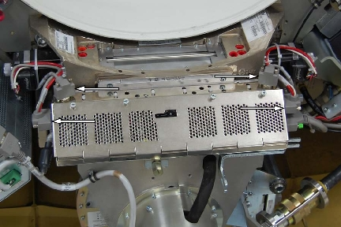
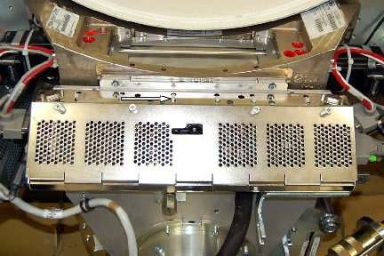
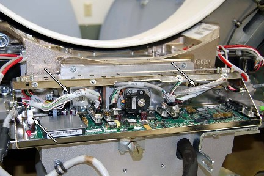
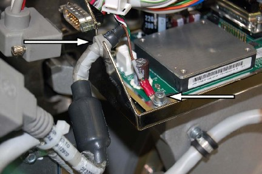
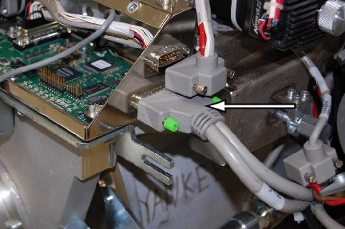

Operating Documentation
Direction 5193574-800, Rev# 22
LightSpeed 7.X Service Methods
Module Version 6.0, Version Date 6/12/15
Operating Documentation |
| Required Persons | Preliminary Reqs | Procedure | Finalization |
|---|---|---|---|
| 1 | Not Applicable | 60 mins | 45 mins |
This document provides the necessary steps for replacing the Collimator Control Board.
| Last Revised: | June 12, 2015 |
| Item | Qty | Effectivity | Part# | Manufacturer |
|---|---|---|---|---|
| Tie-wraps | 6 or As Required | - | - | - |
| Item | Qty | Effectivity | Part# | Manufacturer | |
|---|---|---|---|---|---|
| CCB Chassis Assembly | 1 | - | 5129998-2 | - | |
| VCTHD Failsafe CCB Asm | 1 | - | 5335448 | - | |
| ||||
| Follow ALL required safety and PPE procedures customary for your organization when working on this product. | ||||
Remove side, top, and front gantry covers.
Stop the rotor of X-ray tube in case of Liquid Bearing Tube before HVDC off. Refer to Liquid Bearing Tube Rotor stop procedure for details.
Turn OFF the Axial Drive and HVDC switches on the gantry’s Service Switch Panel.
Position the tube at 6 o'clock.
Turn OFF the 120VAC switch on the gantry’s Service Switch Panel.
Disconnect CAM encoder harness at the CCB chassis for both CAM motors and also disconnect CAM power harness at the CCB chassis for both CAM motors.
Illustration 1: Harness Connectors

Cut the tie-wraps that secure the wiring harness of the CCB chassis (usually has 6).
Illustration 2: Tie-wraps

Loosen the four (4) thumb-screws holding the front CCB chassis cover and remove the cover.
Illustration 3: Four CCB Cover Screws

Disconnect connectors J3 and J4 filter motors and encoders from the CCB. Use access holes in chassis for back screws.
Illustration 4: J3 and J4 - disconnecting

Position the CAM cables out from the CCB / Chassis assembly, and disconnect the power cable.
Illustration 5: Cam Cables

Remove the ground screw and disconnect the grommet.
Illustration 6: Ground and Grommet

Disconnect collimator connector J7.
Illustration 7: Collimator J7

Remove cable clamp screws holding filter motor leads.
Illustration 8: Cable Clamp

Remove the four (4) M6 screws holding the CCB/Chassis assembly to the collimator.
Illustration 9: CCB Chassis Mounting Screws

To Install new CCB, Carefully route the wire harnesses through the CCB and position the CCB Chassis assembly.
Install the four (4) mounting screws.
Position the filter motor leads and install the cable clamp screws.
Connect collimator connector J7 and torque to 3.0 Nm (26.6 lb-in).
Position the grommet and ground wire, install the ground screw.
Connect the power cable and reposition the cables inside the chassis.
Connect J3 and J4 connectors and torque to 3.0 Nm (26.6 lb-in).
Install the six (6) new tie-wraps securing the wiring harness.
Connect the CAM encoder and power harnesses at the cam motors.
Install the chassis cover.
Turn ON the 120VAC, Axial Drive and HVDC switches on the gantry’s Service Switch Panel.
Install all the covers.
For new CCB, system should auto-detect new CCB to synchronize system proper characterization file / serial number. Follow on-screen instructions.
For new CCB, it may be necessary to run Flash Download.
For new CCB, perform: